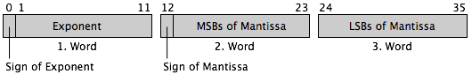
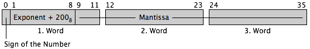

Data Formats in the Memory Inspector Drawer
-
6-Bit ASCII.
Two 6-bit ASCII characters are packed into one memory word,
the first character in the most significant half of the word.
This format is often used for packed storage of character strings in
the PDP-8 memory.
-
8-Bit ASCII.
Any memory word contains one 8-bit ASCII character, stored in the least
significant bits fo the word. The memory inspector ignores the most
significant bit because it is normally set to one or used as a parity bit.
-
OS/8 Packed 8-Bit ASCII.
The OS/8 Disk Monitor System uses this format for storing text files.
Three 8-bit characters aaaaAAAA bbbbBBBB ccccCCCC are stored in two
consecutive 12-bit words as ccccaaaaAAAA CCCCbbbbBBBB. The memory inspector
ignores the most significant bits of the 8-bit characters.
-
Sigend Integer.
The 12-bit memory words are interpreted as 12-bit two’s complement
numbers. The valid range is −2048 to 2047.
-
Unsigned Integer.
The 12-bit memory words are interpreted as 12-bit binary numbers.
The valid range is 0 to 4095.
-
Double Word Signed Integer.
Two consecutive 12-bit memory words are interpreted as a 24-bit two’s
complement number. The first 12-bit word contains the least significant half
of the number, the second word the most significant half. This is the order
used by the EAE instructions DAD and DST. The valid range is −8388608 to
8388607.
-
Double Word Unsigned Integer.
Two consecutive 12-bit memory words are interpreted as a 24-bit binary number.
The first 12-bit word contains the least significant half of the number, the
second word the most significant half. The valid range is 0 to 16777215.
-
FPP8-A Floating Point.
This is the single precision floating point format used by the FPP8-A floating
pointn processor, the DEC floating point software package and a lot of PDP-8
software, e. g. FORTRAN IV and FOCAL-8. FP numbers are stored in three
memory words:
 The expontent e is a 12-bit signed two’s complement integer,
the mantissa is interpreted as a signed two’s complement normalized
fration, i. e. 0.5 ≤ |m| < 1, and the represented number
is m · 2e. The range of FP numbers is
about −0.99E+619 to 0.99E+619; they have about six significant decimal
digits.
The expontent e is a 12-bit signed two’s complement integer,
the mantissa is interpreted as a signed two’s complement normalized
fration, i. e. 0.5 ≤ |m| < 1, and the represented number
is m · 2e. The range of FP numbers is
about −0.99E+619 to 0.99E+619; they have about six significant decimal
digits.

-
FPP8-A EP Floating Point.
This is the extended precision floating point format of the FPP8-A floating
point processor. The EP format is the same as the FP format, but the mantissa
occupies five 12-bit words, extending the precision of EP numbers to
approximately 15 significant decimal digits.
-
FORTRAN II Floating Point.
This floating point format is used by the PDP-8 8K FORTRAN system.
A number of this format is stored in three words:

The exponent e of the number is stored (after adding 200 (octal)) as
an 8-bit unsigned binary number. The mantissa m is stored as a 27-bit
usigned normalized fraction, i. e. 0.5 ≤ m < 1.
The range of FORTRAN II floating point numbers is about −1.7E+38 to
1.7E+38, the smallest nonzero number is ±0.14E−38; they have
approximately eight significant decimal digits.
-
Pascal-S Floating Point.
This is the floating point format used by the PDP-8 Pascal-S compiler of
Heinz Stegbauer. It is the same as the FPP8-A FP format, but uses three words
for the mantissa (about ten significant decimal digits) and stores it as an
unsigned (not two’s complement) normalized fraction.
Remarks
-
For input and output of PDP-8 floating point formats in the memory inspector,
the simulator uses IEEE double precision floating point numbers as an intermediate
format. Because the biggest IEEE double is 1.79E+308, there are very big PDP-8
floating point numbers which cannot be represented as an IEEE double. These
numbers are displayed as “(IEEE overflow)”. Likewise very small
PDP-8 floating point numbers can cause an IEEE double underflow, signaled by
“(IEEE underflow)”. Because IEEE doubles have fewer mantissa bits
than the FPP8-A EP floating point numbers, the rightmost bits of the EP
format mantissa are ignored. Bit patterns which do not represent normalized,
valid PDP-8 floating point numbers are indicated by “(not normalized)”.
-
Plug-ins for the PDP-8/E Simulator can add additional formats to the memory inspector drawer.
They simply have to provide an Objective-C subclass of “NSFormatter” that conforms
to the “MemoryInspectorProtocol” protocol from the plug-in API. These classes are
automatically detected and registered.